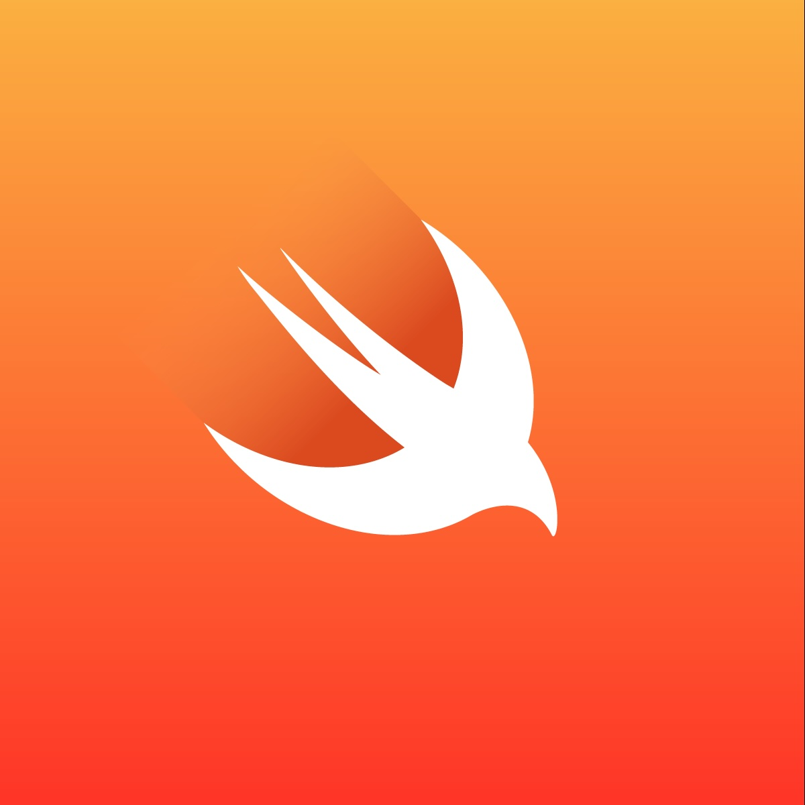

01, Dec 2023
Swift: Defer Keyword
One powerful tool that can significantly contribute to clean and sound memory management and resource cleanup in Swift is the 'defer' keyword. Let's cover some applications of 'defer' so we can streamline resource management and ensure critical cleanup tasks are executed consistently.

Understanding the 'defer' Keyword
At its core, the 'defer' keyword enables us to delay the execution of a code block until the current scope is exited, regardless of the exit path. This mechanism proves particularly valuable in scenarios where we need to ensure specific cleanup or finalization tasks are executed, irrespective of exceptions, early returns, or other branching conditions.
Resource Cleanup:
A prominent use case for 'defer' lies in resource cleanup. Consider a situation where we open a file, perform various operations, and then need to close the file afterward. By utilizing 'defer', we can guarantee the file's closure. For example:
func processFile() throws {
let file = openFile()
defer {
closeFile(file)
}
// Code to process the file
}
In this example, the 'openFile' function is invoked to obtain a file handle, and the 'closeFile' function is enclosed within 'defer', ensuring it will always be called, even if an exception is thrown or an early return is encountered.
Resource Cleanup; Release and Restore:
The 'defer' keyword also shines when it comes to releasing and restoring resources. Consider a scenario where we fetch data, perform operations, and then ensure the release of acquired resources:
import Foundation
enum CustomError: Error {
case generic
}
class APIHandler {
static let shared = APIHandler()
func fetchData() throws -> String {
throw CustomError.generic
}
func cleanup() {
// Clean up resources
print("Squeaky clean")
}
}
func loadData() throws {
let apiHandler = APIHandler.shared
defer {
apiHandler.cleanup()
}
let data = try apiHandler.fetchData()
print("Successful response ?")
}
try? loadData()
In this snippet, 'defer' guarantees that the 'cleanup' method is invoked, enabling the release of any resources acquired during the 'fetchData' operation. Regardless of how the function exits, the cleanup logic will always execute.
Notice how even though "Successful response ?" was never printed, "Squeaky clean" still prints normally! Try replacing the line
throw CustomError.generic with *return "Some response"*, what do you expect to happen?

Lock Management: Concurrency Control:
To maintain thread safety and prevent race conditions in concurrent code, acquiring and releasing locks is crucial. However, it is equally important to release acquired locks, even in exceptional situations. Observe the following example illustrating the use of 'defer' for lock management:
func performTask() {
let myLock = NSLock()
myLock.lock()
defer {
myLock.unlock()
}
// Code to perform the task
}
In this snippet, the 'lock' is acquired using 'myLock.lock()' and released using 'defer' with 'myLock.unlock()'. This guarantees the lock will always be released, even if an exception is thrown within the task.
Multiple Uses:
The 'defer' keyword offers remarkable flexibility, allowing us to handle complex scenarios efficiently. Consider the following example:
func complexOperation() {
// Set up resources
defer {
// Clean up resources
}
// Perform subtask A
defer {
// Clean up subtask A
}
// Perform subtask B
// ...
}
In this case, 'defer' is employed at different points to ensure proper cleanup. However it's important to know of the order of execution. The rule is, 'defer' statements in the same scope always execute in reverse order of declaration. In this example, 'Clean up subtask A' will execute then 'Clean up resources'.
Nested Uses:
The 'defer' statements can also be nested within each other, simply treat each 'defer' as its own scope and apply the same 'last in first out rule'. Consider the following example:
func complexOperation() {
// Set up resources
defer {
// Clean up resources
defer {
// Clean up subtask A
}
defer {
// Clean up subtask B
}
}
// Perform subtask A
// Perform subtask B
}
In this case, the main 'defer' is executed then the inner 'defers' in reverse order. so the execution order will be: 'Clean up resources', 'Clean up subtask B' then 'Clean up subtask A'.
In conclusion, The 'defer' keyword in Swift empowers iOS engineers to wield greater control over resource management. However, it is crucial to exercise caution and employ 'defer' judiciously to maintain code clarity and avoid potential pitfalls while also streamlining resource management and enhance the reliability of your applications.